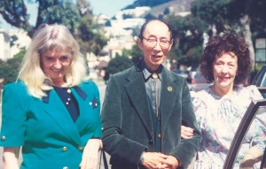

IPPL Member Profile: Violet Soo-Hoo
December 2003
Violet Howard was born in Oak Park, Illinois (a suburb of Chicago). Her family moved to Montana before settling in Seattle, Washington, when she was eight years old. She spent her youth in Seattle, graduating from the University of Washington and later earning a secondary teaching certificate.She also earned a Masters’ degree in Drama and a Lifetime Certificate in Secondary Education from the University of San Francisco. She began her teaching career at a senior high school, but was invited to participate in a Spanish language institute in Mexico City, a joint project of the Mexican and United States governments. After three months in Mexico, she returned to Seattle to resume her teaching. She and her mother began to travel widely.
It was during this time that she heard of an African safari the San Francisco Zoo was offering. As a young child Violet had always dreamt of traveling to Africa. Edgar Rice Burroughs, author of Tarzan of the Apes, was a friend of Violet’s father and she had read all the Tarzan books. Violet’s mother urged her to go.
It was on this safari that Violet met her future husband, Carroll Soo-Hoo, an avid animal lover and world traveler. When asked if it was "love at first sight," Violet replied, No, I don't believe in that! But we were soul mates. Carroll and I were the only ones out of the twelve people on that trip who knew anything about animals." Violet and Carroll were married the year after they met and took five more trips to Africa together over the years.
 From left, Shirley, Carroll and Violet Soo-Hoo Prior to meeting Violet, Carrollwas a benefactor of the San Francisco Zoo. In total the Soo-Hoos donated 40 animals to the zoo including two gorillas, two chimpanzees, one orangutan, two tigers, two cheetahs, two kudus, and two wild dogs. Of course this was long before there were any laws governing the wildlife trade and before the public became aware of the sordid aspects of this traffic.
It was not long before the Soo-Hoos later became crusaders on behalf of zoo and laboratory animals, especially primates. They followed with sorrow the deaths of many animals at San Francisco Zoo, including a mandrill, a chimpanzee, a gorilla, a baby orangutan, and a newly acquired hoolock gibbon.
They worked to bring to an end the then-prevalent feeding of zoo animals by the public. They were also concerned about members of the public tormenting and harassing zoo animals. They fought a zoo project to take visitors into the animal quarters at night, feeling this constituted harassment and posed a threat of disease to the animals.
Violet believes in writing protest letters. On 4 November 1979, she visited the San Francisco Zoo and complained that:
The gorillas were pelted with peanuts and other objects. Harassment by a man obviously drunk and children climbing on the guardrail were situations witnessed...How long is the city going to permit such mistreatment of animals?
The Soo-Hoos were lucky enough to meet the late gorilla expert and passionate conservationist, Dian Fossey, several times on her visits to California.
Carroll, who passed away in 1998, read every issue of IPPL News from cover to cover. Violet continues to carry the torch now in animal protection, turning her living room into a workshop. She has been a member of IPPL since 1977, and her passion is still the protection of laboratory animals. According to Violet:
We were very privileged characters. Drag an animal out of it’s natural habitat and treat it like dirt? NO. Treat them like family! On that subject I want to be very radical. I won’t change my feelings.
There is no doubt that Violet and Carroll Soo-Hoo have made a difference, not just for the animals at San Francisco Zoo, but also for those of the world!